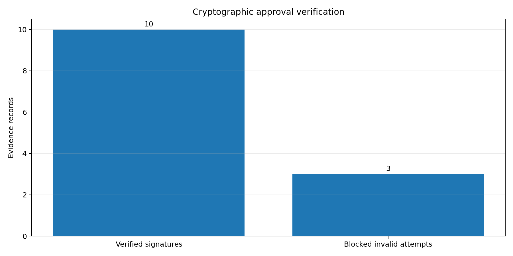
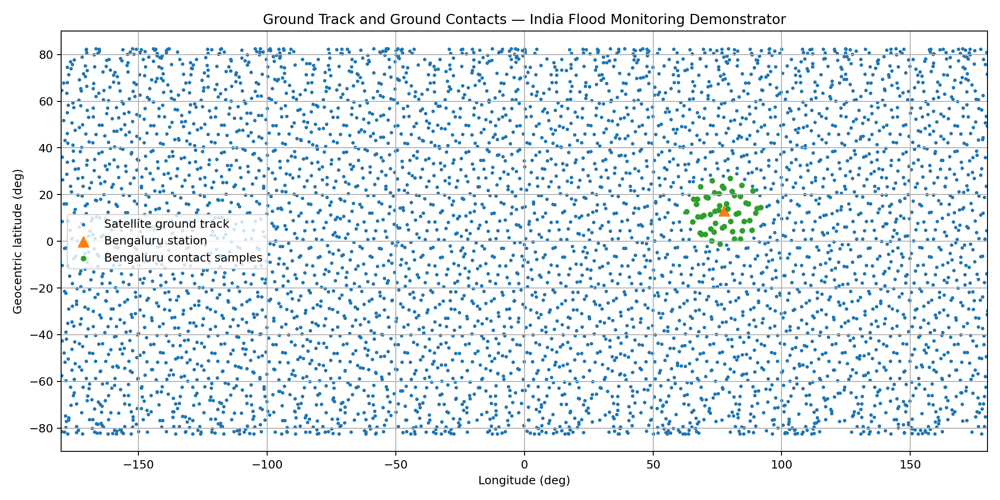
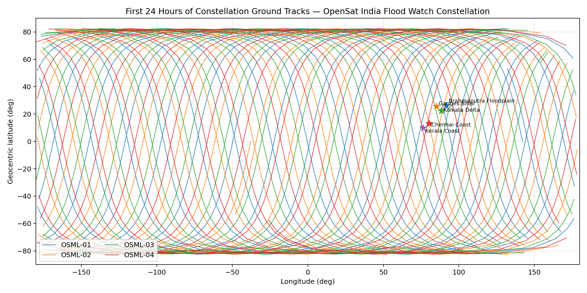
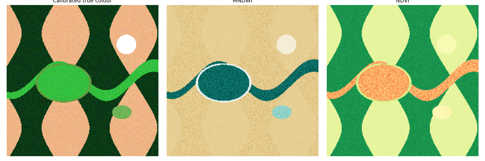

Mission & orbit analysis
J2 propagation, eclipse geometry, ground contacts, target access, revisit time and independent orbit validation.
OpenSat Mission Lab is an open-source CubeSat digital twin that connects mission design, orbital mechanics, spacecraft subsystems, Earth observation, autonomous operations, cloud services and cryptographically governed command workflows—on a home PC.
Each layer produces machine-readable evidence, visual reports and reproducible scenarios—so the repository demonstrates both space engineering and professional software systems.
J2 propagation, eclipse geometry, ground contacts, target access, revisit time and independent orbit validation.
Power, thermal proxies, ADCS, reaction wheels, communications, payload storage and flight-software modes.
Calibrated imagery, optical/SAR fusion, flood time series, onboard edge intelligence and geospatial catalogues.
Coordinated scheduling, inter-satellite links, conjunction screening, task replanning and safety trade studies.
REST/STAC APIs, workers, object storage, security, observability, supply-chain evidence and multi-region resilience.
Signed approvals, separation of duties, authorization windows, workflow replay and exhaustive safety checking.

The latest release adds Ed25519-signed approvals, two-person separation of duties and command grants bound to exact workflow and command digests.
The site highlights the same architecture implemented in the repository—from mission configuration to human-authorized operations.
Open a chart for full resolution or enter one of the generated interactive dashboards.

Earth-fixed propagation and coverage.

Multi-spacecraft mission analysis.

Calibrated spectral products and classification.
The project ships with a workspace, setup scripts, run profiles and generated demonstration outputs.
Set-ExecutionPolicy -Scope Process Bypass .\scripts\setup_windows.ps1 # Run v3.1 safety-assurance validation opensat-v31-demo --output outputs 3.1 # Run all automated tests python -m pytest -q